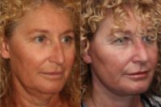
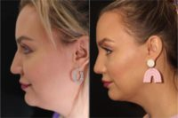
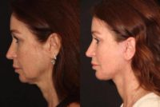

Solomon Facial Plastic – Thornhill in Thornhill, Ontario
Name: Solomon Facial Plastic – Thornhill
Display name: Solomon Facial Plastic – Thornhill
Website: https://www.solomonfacialplastic.com/
Office hours: Mon: 9:00am – 5:00pm
Tue: 9:00am – 5:00pm
Wed: 9:00am – 5:00pm
Thu: 9:00am – 5:00pm
Fri: 9:00am – 5:00pm
Phone: (905) 764-7799
Address: 57 Centre St., Thornhill, Ontario, Canada, L4J 1G2
City: Thornhill
State: Ontario
Country code: CA
Postal code: L4J 1G2
Phone: +19057647799
Neighborhood: Thornhill
Country: Canada
GPS coordinates on map: 43.8156194,-79.4264108

Solomon Facial Plastic – Thornhill
Treatments:
- Microdermabrasion
- Botox
- ArteFill
- Cheek Lift
- Neck Lift
- Juvederm
- Facelift
- Lower Facelift
- Restylane
- Radiesse
- Rhinoplasty
- Cheek Augmentation
- Laser Resurfacing
- Fraxel Laser
- Chemical Peel
- Sclerotherapy
- Salicylic Peel
- Dermabrasion
- Facial Fat Transfer
- Eyelid Surgery
- Brow Lift
- IPL
- ActiveFX
- Nonsurgical Facelift
- Mohs Surgery
- Dysport
- Nonsurgical Nose Job
- Chin Implant
- Ear Surgery
- DeepFX
- Teosyal
- Lipoma Removal
- Fraxel Repair
- Hyaluronidase
- Sinus Surgery
- Latisse
- Double Eyelid Surgery
- Lip Fillers
- Chin Liposuction
- Mole Removal
- Skin Rejuvenation
- Mini Facelift
- Revision Rhinoplasty
- Scar Removal
- Lip Lift
- Genioplasty
- Septoplasty
- Laser Peel
- Dermal Fillers
- Fractional Laser
- CO2 Laser
- Facial Reconstructive Surgery
- Cleft Lip And Palate Repair
- Earlobe Repair
- Xeomin
- CoolSculpting
- Lip Implants
- TotalFX
- EVLT
- Buccal Fat Removal
- Lip Surgery
- Asian Rhinoplasty
- African American Rhinoplasty
- Liquid Facelift
- Lip Reduction
- Vampire Facelift
- Voluma
- Pelleve
- Facial Feminization Surgery
- Volbella
- Forehead Reduction
- MACS Facelift
- Deep Plane Facelift
- Facelift Revision
- Adam’s Apple Reduction
- Kybella
- Dimple Surgery
RealSelf Info
Profile created: Jul 17, 2017
Profile modified: Sep 14, 2020
Review count: 1
Rating: 5.0
RealSelf’s PRO: No
Doctors
Name: Philip Solomon, MD, FRCS
Statement: Facial Plastic Surgeon, Otolaryngologist Head and Neck Surgeon in Practice since 1999. Having performed 1000s of facial aesthetic procedures. Runs a fully accredited surgical facility Solomon Nasal and Facial Surgery Center. Chief Surgery 2009-2017. Teaching Faculty University of Toronto.
Began aesthetic medicine in: 1994
Rating: 4.4
Staff
Name: Jacklyn Sudetic
Position: Nurse Injector
Years experience: 7
Biography: Jacklyn, a meticulous Facial Injector specializing in Advanced Cosmetic Injectable treatments, has worked along side Dr. Solomon for 7 of her 10 years in Cosmetic Aesthetics. She has received extensive training here in Canada as well as internationally. She specializes in Botox, Facial Fillers, Platelet Rich Plasma (PRP) and Belkyra. She believes in blending the art and science of aesthetic procedures to enhance and refine your facial features to improve the way you look and feel.
Our patients come from all over the province to seek Jacklyn’s expertise. She is diligent in using a very discerning eye when collaborating with all her clients to understand their unique needs. She uses her extensive knowledge of facial aesthetics to customize a detailed treatment plan in order to achieve the absolute best possible results.
As a patient at the SFP Surgical Centre, Jacklyn will ensure that your experience is nothing but exceptional.
Name: Nurse Vesta Rahimi
Position: Registered Nurse
Can answer: 1
Years experience: 5
Biography: Vesta, our Registered Nurse has worked alongside Dr. Solomon for over two years. Her warmth, dedication, and passion for patient care is truly exceptional. She is one of our cosmetic injectors alongside, patient care coordinator, and operating room/post-anaesthesia recovery room nurse. You will have the pleasure of interacting with Vesta in both consultations and procedures. Vesta will go above and beyond for our patients and make their experience at Solomon Facial Plastic one to remember. She always ensures our patients are comfortable and educated in the areas they are looking to address. Vesta also has experience in nephrology and acute medicine, which has helped her shape into a strong Registered Nurse. Vesta will provide you with one-on-one exceptional care and attention.
Name: Afsoun Dastani
Position: Master Aesthetician
Years experience: 20
Biography: For nearly 20 years, Afsoun has been a certified Medical Esthetician, having owned her own Medical Spa for many years prior to joining our clinic.
Afsoun has extensive knowledge in facial skin care treatments and will spend time assessing your needs, while discussing your goals in order to create a personalized treatment plan that is best for you.
Afsoun is outstanding in all areas of esthetics including Laser hair removal, Oxygeneo and Photofacials, and is now our exclusive Coolsculpting specialist.
Recognizing that your skin care extends beyond her time with you, Afsoun will devise a skin care routine to help maintain the work you receive in our clinic. She has trained exclusively with ZO Skin Medical health, our pharmaceutical grade skin care line, and will help you select the products that would be best for your skin. Afsoun is also fluent in Farsi and German and you will be sure to find her approach to patient care, warm and endearing.
Name: Solomon Executive Staff
Position: Patient Care Coordinator
Name: Nurse Hanna Burshtein
Position: Nurse Injector
Can answer: 1
Years experience: 2
Biography: Hanna Burshtein is a Registered Nurse and certified Cosmetic injector at Solomon Facial Plastic. Hanna has an eye for cosmetic rejuvenation and works in collaboration with our patients to meet their aesthetic desires. Hanna’s goal is to enhance ones’ natural beauty rather than transformation. Her ideal result is when a client looks refreshed, healthy and is happy with how they look.
Hanna has worked previously in mental health for many years in a hospital setting and understands the connection between self-esteem, body image and self-confidence. She combines this wealth of knowledge with her aesthetic goals to achieve a natural and enhanced self-image.
Hanna has Bachelor of Science degree in Medical Science and Biology from the University of Western Ontario and a Bachelor of Nursing Science at York University. She received her Cosmetic Injector Certification from APT Medical Aesthetics. Hanna has mentored with industry leaders and worked along side Dr. Philip Solomon MD, FRCSC where
Practice’s answers
Question
Answer Header & Date
Answer Snippet
How soon after injury HA fillers can be applied to treat depressed scar?
Depressed scar on forhead
Jan 14, 2021
Hi there,
A better treatment a new depressed scar is botox or toxin to relax the muscles so there is reduced tension on the scar so it heals well. Also diligently using silicone scar gel on the scar will help reduce it over time. Prp is an excellent treatment for scars as well and can start as soon and the scar on the wound has healed.
I’m not sure if it’s best to dissolve everything and just start over?
filler
Jan 14, 2021
Hi there,
I would recommend dissolving the filler in your upper lip. If you are unhappy with it, it should be done. Although filler is supposed to last 6 months in the lip, it can often last longer, up to years, especially when several syringes of filler are used or if it’s been overfilled. As for your chin, you could dissolve as well.
Best way to treat permanent vertical indentation between the eyebrows? (Phtoo)
line between forhead
Jan 13, 2021
You surgeon is correct. This is a riskier area to fill as there are blood vessels in that region the feed you eye for vision. If the blood vessels get blocked, there is a risk of blindness. Although rare. There are some experienced surgeons that will treat the are with filler.
Can filler fix my high alar rims?
filler to improve nostrils
Jan 13, 2021
Although this can be done, it is not advisable, because of a risk of tip necrosis, which means tissue death to the tip of your nose. There are blood vessels on you nostrils that feed into the tip of your nose, if one of these vessels get blocked by filler, the tip tissue could die due to lack of blood and oxygen.
Botox Injection sites. What anti-wrinkle benefit does injecting below the hairline have?
The forehead injections
Jan 13, 2021
It difficult to assess exactly why your injector injects up high on your forehead without a picture. That being said, the forehead muscle is the only muscle in you forehead that lifts the brows and eyes. If you have a short/small forehead, the injections should remain high. If your brows sit low or heavy, you injections should sit high. If injected too low, it could lead to a brow ptosis, a drop in your brows, it could also make the area feel heavy.
Latest Before And After Photos
-

-
59 Year Old Lady Treated With Deep Plane Face Lifting Treatment With Dr Solomon Facial Plastic – Thornhill
-

-
35 Year Old Mrs. Treated With FaceTite With Dr Solomon Facial Plastic – Thornhill
-

-
51 Year Old Miss Treated With Aesthetic Rhinoplasty Picture With Doctor Solomon Facial Plastic – Thornhill
Last updated on 12/10/2023